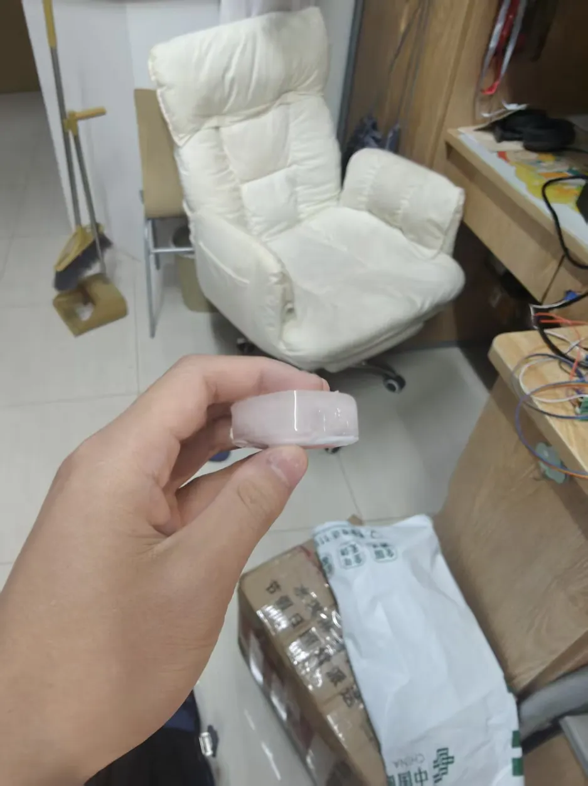
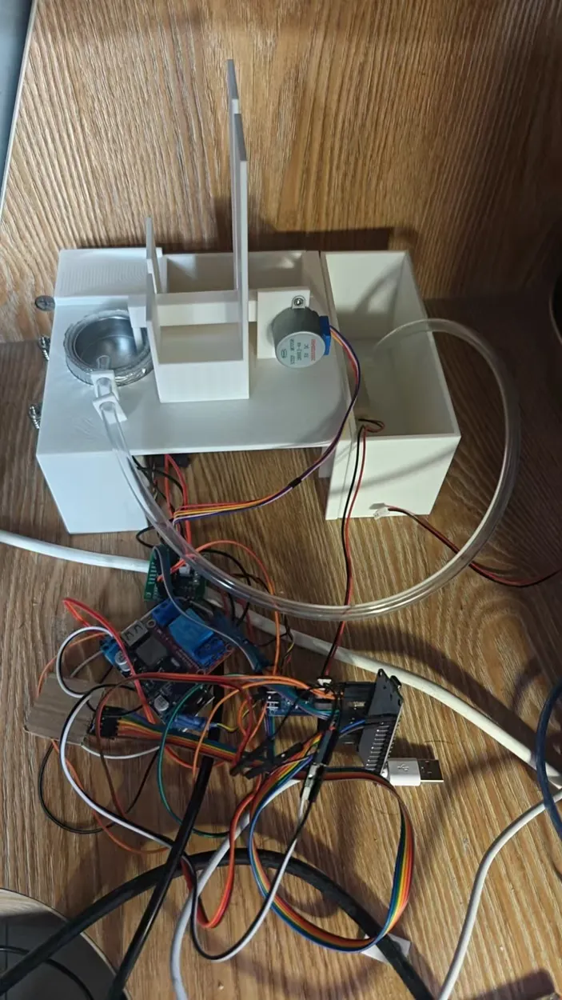
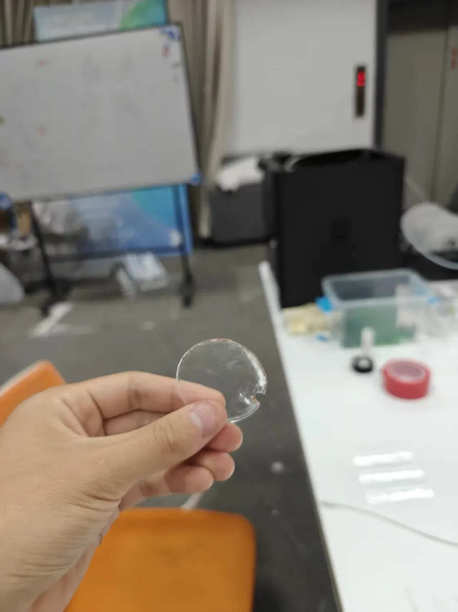
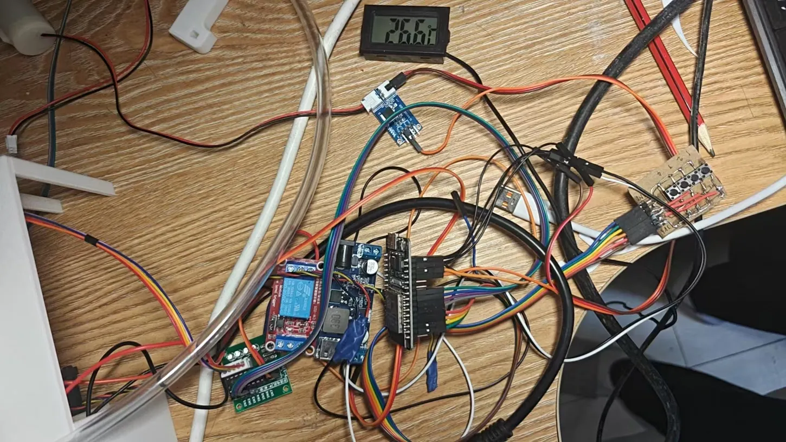
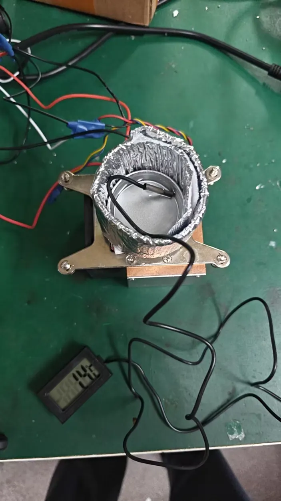

返回硬件项目索引
返回硬件项目索引制冰机
阅读项目文档 ↓就是一个可以制冰的机器。








项目文档
项目介绍
项目介绍
项目概况
项目名称：制冰机
mentor：徐奕
项目简介
即简单功能介绍，可附图和视频加以说明
制冰机就是一个用来制造冰块的机器。
嗯好像没什么好介绍的，就是一个可以制冰的玩意。
半导体制冷片选择一片12706和一片12712，总功率180W
继电器选择途格斯5V继电器（什么你问为什么12V电压用5V继电器？那你别管，反正又没爆炸
容器选择铝合金茶叶罐（45mm直径）的盖子部分
散热器选择酷冷至尊X99服务器CPU散热器
水泵选择维可思5V水泵和外径8mm软管
步进电机选择28BYJ-48
降压模块选择超LM2596S
还有ESP32进行控制
整体大小长24cm宽16cm高24cm（不包括电路部分）
---
项目成长
构建"迭代与改错"记录，可仅截屏展示
嵌入式代码
代码基本上是春夏学期项目的基础上做了一些小修小改得到的，就是加了个控制水泵的功能，以及电机的运动时间和运动方向改了一下。
电路原理图
电路部分（请输入文本）
我电路部分的设计完全遵循“又不是不能用”的原则，没有自己画电路板而是全部飞线解决
以下为各个模块之间的飞线示意图
机械结构
机械结构设计说明
这是项目的3D建模，右下是制冰结构，上方的装置可以把以及制好的冰提起来，然后冰会被中间竖起来的板子卡掉并且顺着斜坡滑到下方收集冰块的盒子里。左边是水槽，在制冰结束后通过水泵补充水并且进行下一轮制冰。
调试与迭代过程
可附加图片视频
飞线
最初的制冰尝试，失败
成功制出第一块冰
第一版建模
增加esp32进行控制
增加水泵和水槽，最终成品
AI使用说明
列举在项目内容中的AI使用情况
选型：AI提供了主流的半导体制冷片以及使用场景。
代码部分：继承了春夏学期项目的代码，而春夏学期代码的部分函数是由AI编写的。
交流与心得（可选）
可贴几张与mentor、同学交流的截屏
夜骑锐提供了取冰部分的设计思路，以及提供了棒冰和零食。
⑥🐏☞学长提供了情绪价值。
猫娘学长提供了无人机（但是好像和我的项目没有啥关系。
徐奕学长提供了mentor。